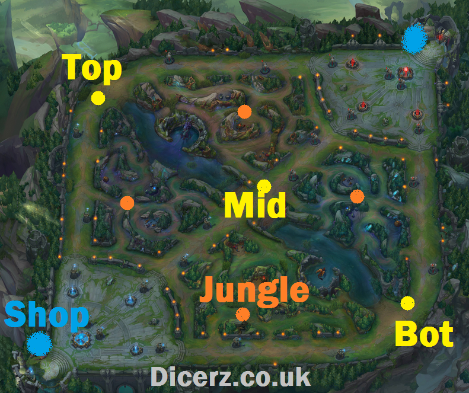
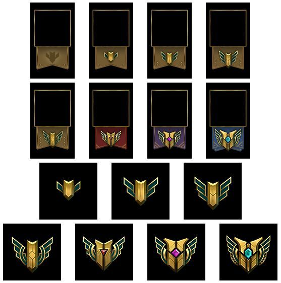

Introduccion
El League of Legends o también abreviado en sus siglas LoL es un MOBA (Multiplayer Online Battle Arena) donde 2 equipos de 5 jugadores luchan con la finalidad de destruir el nexo o la base enemiga, pero para lograr ganar deberán conseguir oro para comprar objetos que les otorguen bonificaciones permanentes y así destruir las torretas enemigas hasta llegar a su base o nexo, romperlo y ganar la partida. Posiciones en el Mapa
Top: Campeones con bastante vida, capaces de hacer y recibir daño. Generalmente en esta línea se producen las primeras kills o asesinatos. Mid: Campeones magos o asesinos, tienen daño en zona pero poseen poca vida por lo que tendrán que esperar que empiecen las TF ( teamfights o peleas en equipo) para meterse y hacer daño. ADC: Uno de los dos campeones de Bot; son tiradores en su gran mayoría y pueden hacer mucho daño a larga distancia. Si logran tener muchas kills son capaces de matar al equipo entero contrario. Son los que tienen menos vidas y por eso deben ser protegidos. Support: Esta clase de campeón es el encargado de proteger al ADC. Hay dos tipos: los TANQUES que son los que tiene mucha vida y los CURANDEROS, son los que tienen la capacidad de curar al ADC. Jungla: Este personaje debe tener mucho daño para limpiar la jungla y versatilidad a la hora de ayudar a las demás líneas. Cada uno de ellos cuenta con cuatro habilidades únicas y una pasiva, estas se mejorar por cada nivel que se sube (máximo 18 niveles) y al nivel 6 se desbloquea la ulti que es la habilidad más importante de cada campeón.

MAESTRÍAS Son un reconocimiento que se te da por manejar muy a un campeón, también es una forma de medir que tan bien lo manejas. Existen 7 maestrías en total, siendo la 7 la mayor y por lo tanto la más difícil de conseguir, cada maestría trae un título en específico según sea el tipo de campeón que estés ascendiendo. Al principio solo existía hasta la maestría 5 lo que nos da a pensar que puede que se creen más grados a medida en como avanza el sistema
Existe otro modo de juego llamado ARAM, la cual no es competitiva y consta de una sola línea en la cual los 2 equipo de 5 jugadores cada uno tendrán que romper el nexo o base del equipo contrario. Este modo de juego se utiliza para probar campeones. El asistente del juego te elije un campeón al al azar que solo podrás cambiar si posees de unos dados.

Opinión personal: Es un juego demasiado adictivo que te hará pasarla bien durante al menos 20 minutos, como recomendación de un ex jugador ( ex ya que me banearon permanentemente debido a un lenguaje abusivo) es que disfruten el juego e ignoren al resto del equipo que quiera pelear, ya que a pesar de ser tu equipo existe gente tóxica que distrae del objetivo principal que es ganar y pasarla bien. Si ven que los jugadores comienzan a flamear (actitud negativa o toxicidad en el char) silencienlos inmediatamente así no caen en la tentación de responderle y terminar baneados como yo xd.